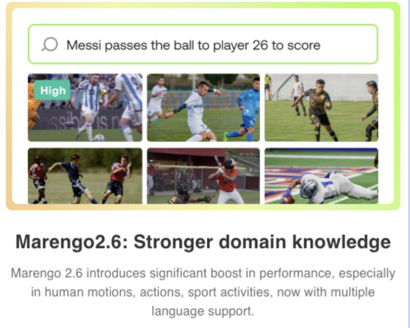
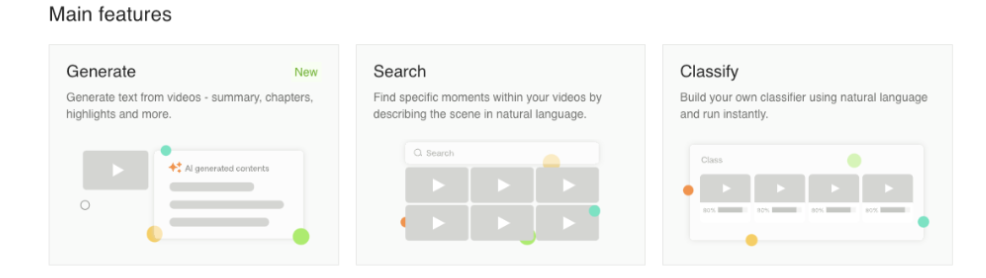

Introduction
I was stumbling across YouTube when researching for my final project about the intersections of Sports Analytics and LLMs. I curious to see if there were any Generative AI tools out there that analyzed videos such as sports highlights, game summarys, etc. It turns out there was one tool called “Pegasus” by Twelve Labs.
I decided to check it out further on their website and was fascinated about their use of video to text and how it makes its outputs. I decided to test it out myself and made an account.
Immediately I was pleased to see the tool’s connection to sports, with its “stronger domain knowledge” for sports as well as its main features.  
Testing the Model
I wanted to see how well the model really understood sports and decided to provide it one of the most iconic moments in basketball history. Thankfully, the video includes the moment from multiple angles and lots of dialogue, that the model could hopefully pick up on and provide an analysis of.

After providing the YouTube link, it took a few minutes to process it.
Prompting
Once loaded, I prompted the model with the question, “Explain what’s happening in the video. For context, you’re watching a basketball game highlight. Explain the key words in basketball such as”rebound,” “3 pointer,” etc.
Response #1
LeBron’s Layup Tie: Miami Heat vs. San Antonio Spurs’ Intense Fourth Quarter with Ray Allen’s Game-Tying Three-Pointer
Topic:
Thrilling Basketball Playoffs Moment: LeBron James’ Game-Tying Layup by Ray Allen’s Historic Three-Point Shot.
Hashtags
#basketball #MiamiHeat #SanAntonioSpurs #LeBronJames #playoffgame #NBA #excitement
Summary
The video captures an intense moment from a basketball game between the Miami Heat and the San Antonio Spurs. The game is in the fourth quarter with the Heat leading by 3 points and 9 minutes and 11 seconds remaining on the clock. The focus is on the Heat’s LeBron James, number 34, who has the ball. LeBron skillfully maneuvers around a Spurs defender and makes a layup, scoring for the Heat. The crowd erupts in cheers as LeBron completes the basket, and his teammates on the bench join in the celebration. LeBron acknowledges the crowd with a raised fist, expressing triumph. The video showcases the athleticism and skill of the players, as well as the passion and engagement of the fans. Throughout the video, there are references to basketball terms such as rebound, three-pointer, and the history of three-point shooters in the NBA. This basketball game highlight captures the excitement and intensity of the sport.
Thoughts
This output is not correct. The heat were actually down by 3 points with 9 seconds left to go. Ray Allen took a 3 pointer, not lebron taking a layup.
I re- attempted with the same prompt but with a lower temperature this time (to 0).
Response #2
Based on the visual information provided, the video is a basketball game highlight between the Miami Heat and the San Antonio Spurs. The footage captures a sequence of plays involving LeBron James (#34) from the Heat team. The game is in the fourth quarter, with the Heat leading by 3 points (89-86) and 9 minutes and 11 seconds remaining on the game clock. In terms of basketball terminology, the video showcases various key words and actions. These include: Rebound: This refers to the act of retrieving the ball after a missed shot. In the video, there are instances where players from both teams attempt to grab rebounds after missed shots. 3 pointer: A 3 pointer is a shot taken from beyond the three-point line, with the potential to score three points. The video captures moments where players attempt and make successful 3-point shots. Foul: A foul is a violation of the rules, often resulting in free throws for the opposing team. While the video does not explicitly show fouls, it is mentioned in the answer that potential fouls occur during the game. The base description provides additional context about the video. It mentions that the footage is taken from a high vantage point, likely from the upper level of the arena. The scoreboard indicates that the game is being broadcasted on ESPN and shows the score, time remaining, and team abbreviations. The description also highlights the excitement of the crowd and the intense atmosphere of a high-stakes playoff game. In summary, the video is a basketball game highlight showcasing LeBron James and featuring moments of rebounding, 3-point shots, and potential fouls. The base description provides further details about the game, the teams involved, and the overall atmosphere.
Thoughts
This response is slightly better, it actually answered my question about basketball terminology as well as provided that the game was on ESPN. However, the score and the play are both not true.
Prompting
I tried it again with a temperature of 0.01.
Response #3
The video captures a thrilling moment from a basketball game between the Miami Heat and the San Antonio Spurs. The footage is taken from a high vantage point, providing a clear view of the court and the crowd. The game is in the fourth quarter with the Heat leading by 3 points, 89-86, with 9:11 remaining on the game clock. The focus is on the Heat’s number 34, LeBron James, who is in possession of the basketball. LeBron skillfully maneuvers around a Spurs defender and makes a layup, scoring for the Heat. The crowd erupts in cheers as LeBron completes the basket, and his teammates on the bench join in the celebration. The video showcases the intensity and excitement of professional basketball, highlighting the athleticism and skill of the players, as well as the passion and engagement of the fans.
Thoughts
This response is still inaccurate. However, the “chapters” of the video are accurate. I’m not sure why it’s not able to summarize the video but can categorize the video into different sections.
Chapters:
Intense Playoff Game 00:00:00 - 00:00:09 The video captures a thrilling moment from a basketball game between the Miami Heat and the San Antonio Spurs, as indicated by the team abbreviations ‘MIA’ and ‘SAS’ displayed on the scoreboard. The footage is taken from a high vantage point, likely from the upper level of the arena, providing a clear view of the court and the crowd. The scoreboard shows that the game is in the fourth quarter with the Heat leading by 3 points, 89-86, with 9:11 remaining on the game clock. The scoreboard also displays the ‘ESPN’ logo, suggesting that the game is being broadcasted on ESPN.
LeBron’s Incredible Shot 00:00:10 - 00:00:30 As LeBron approaches the basket, he is met by a Spurs defender who attempts to block his shot. LeBron skillfully maneuvers around the defender and makes a layup, scoring for the Heat. The crowd erupts in cheers as LeBron completes the basket, and his teammates on the bench join in the celebration.
Ray Allen’s Game-Tying Three 00:00:34 - 00:00:48 Ray Allen hit a huge three-pointer to tie the game. He backed up behind the three-point line as he caught the pass and then came right back into the shot. The crowd goes wild as the game is now tied.
Conclusion
Overall, I think the model is solid. It does a good job summarizing the video through chapters but is not able to tell me key details about the video such as what shot he took, the time left in the game, and who shot the ball. I hope to try the model with other sports to see how it performs.